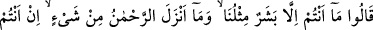
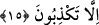

Kral bu duruma şaşırdı. Şem’ûn çocuğun sözlerinin kralı etkilediğini görünce işin aslını
ve kendisinin de Îsâ (a.s.) tarafından Antakya halkına gönderilen bir elçi olduğunu haber
verdi. Krala öğüt ve nasihatte bulundu.
Kuşeyrî’nin anlattığına göre kral ileri gelen adamlarının azgınlarından çekindiği için
gizlice îman etti. Kavmi ise küfürde ısrar etti. Elçileri taşlayarak öldürdüler. ‘Bunların
sözleri/dâvâları aynı’ diyerek Habîbü’n-Neccâr’ı ve diriltilen çocuğun babasını da
öldürdüler. Çünkü o da îman etmişti. Sonra Allah Teâlâ onlara Cebrâil (a.s.)’ı
gönderdi. Cebrail (a.s.) onlara korkunç bir sayha ile seslendi. Onların hepsi ölüp
gittiler. Kıssanın tamamı ileride gelecektir.
Vehb b. Münebbih ve Kâ’bu’l-ahbâr kralın da inkâr ettiğini ve küfürde ısrarcı
olduğunu, onun ve kavminin elçilere işkence etmek ve onları öldürmekte birleştiklerini
söylemiştir. Söz dinlememe ve inâdda devam etmelerinin, münâkaşayı büyüklenmeye
götürmelerinin anlatılması da bunu te’yid etmektedir. Bazılarının dediği gibi kral ve
kavminin bir kısmı îman etmiş olsaydı elçilere arka çıkmaları ve yardım etmeleri
gerekirdi. Bu hususta ya kabul görürler veya şehid olan Habîbü’n-Neccâr gibi
öldürülürlerdi. Böyle bir şey nakledilmemiştir. Bir de insanlar idarecilerinin dini
üzeredir. Hele güçlü bir delil ortaya çıktıktan sonra.
15. Elçilere dediler ki: “Siz de ancak bizim gibi birer insansınız. Rahmân,
herhangi bir şey indirmedi. Siz ancak yalan söylüyorsunuz.”
Îman etmeyen Antakya halkı üçüne birden hitap ederek “Elçilere dediler ki: “Siz de
ancak bizim gibi birer insansınız.”
Sözün muhâtapları olan elçiler zâten beşer olduklarını bilmiyor değillerdi ve bunu
inkâr da etmiyorlardı. Fakat kâfirler, elçilerin beşer olamayacağına inandıkları için
onlar beşer olduklarını inkâr eden kimseler yerine konuldular. Kâfirler insan olmakla
risâlet/elçilik arasında zıtlık olduğuna inandıklarından onları insan olduklarını inkar
eden kimseler saydılar. Dolayısıyla bu beşer olma hükmünü tersyüz ettiler ve “Siz de
ancak bizim gibi birer insansınız.” dediler. Yani siz yalnız beşersiniz/insansınız. Sizde
iddiâ ettiğiniz elçilik vasfı yoktur. O halde elçiliğin size tahsisini gerektirecek sizin bize
bir üstünlüğünüz söz konusu değildir. Şayet Rahmân beşere elçiler gönderecek olsaydı
o elçileri beşerden daha üstün bir cinsten yapardı. Onların iddiâsına göre bu üstün cins
ise meleklerdi.
“Rahmân, herhangi bir şey” semavi bir vahiy ve vahyi tebliğ eden bir elçi
“indirmedi.” Bu durumda siz nasıl elçi oldunuz? Öyleyse size itâat etmemiz bize nasıl